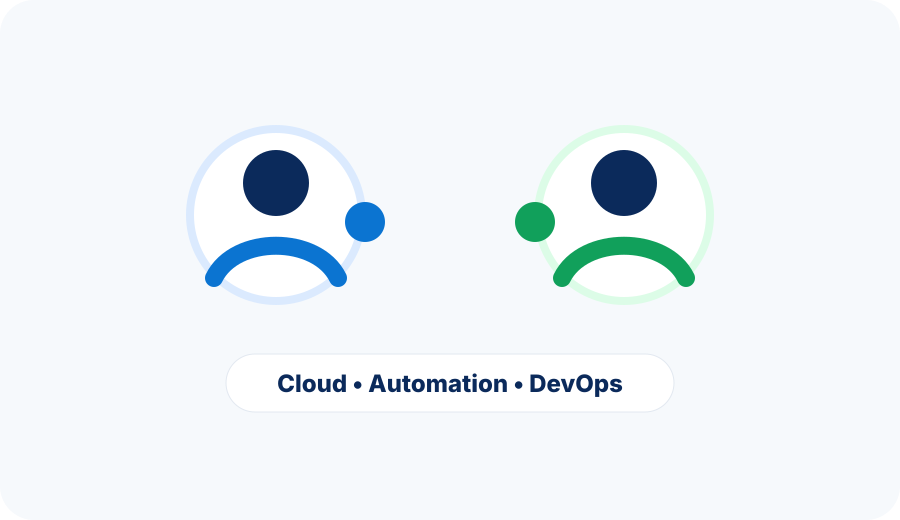

Henderson Andrade
Especialista em arquitetura de cloud com foco em Azure, governança, automação, segurança e excelência operacional.
A TrimTechBR é uma iniciativa pessoal criada por dois amigos, Henderson Andrade e Henrique Mizael, para compartilhar conhecimento e construir projetos open source práticos em cloud, infraestrutura, automação e DevOps — nas horas vagas.

Acreditamos que bons projetos de tecnologia devem ser úteis, claros e bem documentados. A TrimTechBR é como nós dois transformamos a experiência de campo do dia a dia em projetos open source que ajudam outros profissionais a acelerar iniciativas de cloud e infraestrutura.
Especialista em arquitetura de cloud com foco em Azure, governança, automação, segurança e excelência operacional.
Arquiteto de cloud e infraestrutura com foco em Kubernetes, GitOps, IaC, MultiCloud e automação de infraestrutura.
Os projetos são desenhados para serem práticos, extensíveis e documentados para uso e contribuição da comunidade.
Uma iniciativa brasileira com audiência técnica global e mentalidade open-source.